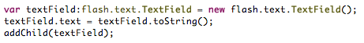
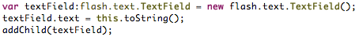

In this example you will learn about how to use the function keyword.
The
function keyword is used to call functions that return a value.
As we've seen in
Lesson 2. The Basics. calling a method is quite simple.
However, in that example the method called did not return a value. But what if you need to retrieve the value
of a function and assign it to a variable? In that case you must use the
function keyword.
The result will display a flash.text.TextField on the stage with the text "[object TextField]".
AS3:

In the example above we call the method
toString on the object
flash.text.TextField,
the value is returned to the property
text on the object
flash.text.TextField.
As we've seen in
Lesson 4. The Instance Keyword. we learned about the
this keyword.
The same rules apply when using the
function keyword when targeting the desired scope.
Avoiding the use of
this will call a method on the object that is being created. This can be seen in the example above.
In the example below, we'll see how adding the keyword
this will impact the result of the method call.
The result will display a flash.text.TextField on the stage with the text "[object Application]".
AS3:

Just as we learned in Lesson 2, we can pass parameters to functions.
The syntax is the same when using the function keyword.
Function with parameters example.
In the example above, we have created two flash.text.TextFields and assigned names "textField1"
and "textField2" respectively. During the creation of the second flash.text.TextField we target the
first and call the method getLineLength. This method requires the index of the line you with to retrieve
the length of. The function is called and the result is returned to the text property on the second
flash.text.TextField.